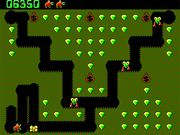
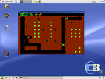

Digger
«Однажды Диггеру оторвали ноги, и с тех пор он перемещался на колесиках.»
— Александр Голубев
«Ты долго в ДИГГЕР не играл! Теперь я грустный терминал...»
— Олдфажный компьютерный вирус
Digger — одна из первых широко распространенных игр на PC, появившаяся в 1983-м году. По времени создания переплюнула даже легендарную Alley Cat, появившуюся только год спустя. Тогда компьютеры на 8088 4,77 МГц казались высокопроизводительными монстрами, а 640 килобайт памяти хватало всем, MSDOS 2.0, новейшая ОС, только научившаяся иерархическим файловым системам, дискетам повышенной плотности и прочим плюшкам, графический дисплей CGA. И на этом мощнейшем железе играли так, что задротам и не снилось. Час за часом, сутки за сутками просиживали они, гоняя Диггера по полям с вкусностями, уворачиваясь от гадов, бегавших по остававшимся за ним тоннелям. А когда появились всякие PC AT и процессор стал слишком быстрым, люди писали замедлители, а суровые мужики играли as is.

Digger remastered
Версии Digger
Оригинальный диггер

Digger есть и для линукса! Даже со звуком!
Написан был семейной фирмой, называющейся Windmill Software и состоящей из программиста по имени Rob Sleath чуть более, чем полностью.
Впечатление о диггере как о игре, получившей меметичность исключительно благодаря геймплею или, более того, случайно, абсолютно неверно. Роб выжимал из оригинального IBM PC всё, что мог, используя няшные ассемблерные хаки, включая ШИМ на PC-Speaker'е и хранение таблицы рекордов в бут-секторе дискеты.
У программирования «по железу» оказалась и обратная сторона: игра была привязана к оригинальному IBM PC с процессором Intel 8088 и работала неправильно на более новых машинах: скорость передвижения монстров была невыносимой уже на 286, а без CGA (например, на EGA) Digger мог и не заработать.
Digger's loader
В начале девяностых русские хакеры Mikel Lavrentiev и Dmitry Petrov запилили софт под названием Digger's loader, который совмещал в себе замедлялку и редактор уровней для диггера. Замедлялка позволяла играть в диггер на компах вплоть до 386; к сожалению, на 486 и выше loader всё равно выполнялся слишком быстро.
В наше время ничего не мешает запускать Digger's loader в DOSBox.
Digger remastered
В 1998 году человек по имени Andrew Jenner, труЪ-фанат диггера, а по совместимости работник Microsoft и, очевидно, неплохой хакер, запилил то, что назвал «Digger remastered». Фактически d.r. — порт диггера на C, полученный путём кропотливого дизассемблирования, анализа и переписывания оригинального digger.com.
После того как Andrew добился нормальной работы диггера на современных ПК, он добавил некоторое количество свистоперделок, включая VGA-графику и возможность настройки клавиатуры.
Вскоре d.r. был портирован на более, чем 9000 известных архитектур и платформ, включая java.
Digger Java
Ностальгирующие олдфаги могут позадрачиваться в любимого «Диггера» даже на обычной мобиле с поддержкой Java, например. И на обычном компьютере, в обычном браузере с поддержкой Java: Digger Online
Приключения Диггера
Ремейк Диггера, нормально работающий на современных ПК с Windows и дополнительными уровнями.
Интересные факты
- Немало людей играли в диггер годами, так и не узнав, что кроме обрушивания на врагов мешков с золотом, можно ещё и стрелять. А стрелять надо было клавишей F1 или F2, что было весьма удобно на ранних моделях клавиатур.
- Игра могла затянуть не на один час, доводя геймера до особого цвета глаз. За эту отличительную особенность была удостоена внимания Юрия Нестеренко. Его опус, изданный в некогда модном глянцевом Компьютерра, нам намекает:
Если ваше руководство
Вам прозрачно намекает,
Что заказчик будет завтра,
А заказ пока стоит —
Оставайтесь на работе
И всю ночь играйте в Digger.
И, взглянув на вас, заказчик
Крайний срок перенесёт
- Также, сохранилось творение на мотив глокой куздры:
Путь Бутявкнутого
Запутаны дремучие подземные ходы,
А в них бутявки тучами и диггера следы,
В них золото манящее и в них могильный ряд
За чащами, за чащами опаснейших преград.
Rep: Диггер, диггер не робей
Хрумкай, трямкай веселей
Изумруды и бутявок,
Прочих страшных стрекозявок,
Вместе с золотом тогда
Обойдет тебя беда.
Мы с диггером, мы с диггером за золотом идем,
Бутявок дюбых трямкаем и песенку поем
Про золото коварное, набитое в мешках,
Про вишенку возмездия, зажатую в зубах.
Мы ищем наши денежки, и мы не простаки,
Мы знаем: деньги трямкают бутявки-дураки,
Ползучесть их завидная, и много золотых
Бесславно окузявится стараниями их.
А камни здесь особые — чистейший изумруд,
Бутявки твердолобые от нас их стерегут,
Но мы, преград не знаючи, грызем, грызем, грызем,
И камни собираючи, вперед, вперед идем.
За доблесть безупречную здесь вишенку дают,
Бутявки, столь беспечные, тогда бегут, бегут,
Мы, помня как звереючи, они кусали нас,
Их гоним не жалеючи и трямкаем тотчас.
1988. Коллективное произведение сотрудников Института Программных Систем АН СССР.
Впрочем, существует и взгляд с другой стороны:
Песня пилота Диггера
Я отправляюсь на охоту,
Передо мною лабиринт…
Простую, грязную работу
Мне здесь проделать предстоит!
Полеты на «эф-девятнадцать»,
Прогулки в танке «эм-один»…
Все это интересно, братцы,
Но с ними «диггер» не сравним!
Мой лабиринт заляпан кровью,
Он в сотнях столбиков могил,
Тот парень за клавиатурой
В нем сотни наших погубил…
За мной уже крадется монстр,
Тот парень жмет на «эф-один»,
Одним из гадов стало меньше,
Но сколько будет впереди!
У нас есть древняя легенда,
Быть может, что она не врет:
Раз в десять лет способен «диггер»
За грань экрана сделать ход,
И если мне это удастся,
Тот парень будет удивлен,
Он мне тогда за все заплатит,
За всех заплатит, и за все!
В его двухкомнатной квартире,
Я порезвиться бы хотел,
И он меня не остановит,
Нажав на клавишу «пробел»…
Но вряд ли мне удастся это:
Похоже, что конец езде,
Вот я в углу, патронов нету!
Дурак, козел, да что ж ты де….
Алексей Свиридов
Алсо
- Диггер — человек, занимающийся изучением искусственных подземных сооружений с целью наделать фотографий и выставить их в быдлоконтакт на зависть другим кибердрочерам.
- Диггер — солдат австралийской армии (на местном жаргоне).